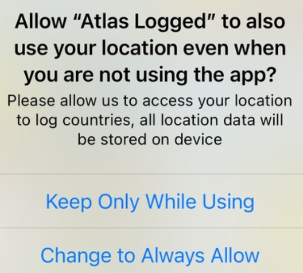

Location Permissions FAQ
Common questions about location permissions, privacy, and battery usage.
The purpose of the app is to provide you with insights into your travel history via automatic location change tracking; with manual entry as a fallback if required. Therefore, for you to use the app to its full extent, location permissions are required.
You can use the app manually if you desire and we plan to implement the ability to analyse location history by looking at your photo library metadata in the future, but this is not currently a feature.
As described above, this is correct and by design. If you are using this app then you have been informed how and why your data is used, and to keep automatic logging enabled this needs to be set to "Always".
This notification appears because Apple has implemented this to inform users of data gathering without their consent to prevent malicious apps and accidental data sharing.

If you have clicked 'Change to while using' when this was prompted, your automatic tracking will stop, so you will need to set this back to "Always" in the settings.
It used to be possible to select "Always" from the initial location settings pop up provided by Apple. However, to protect user privacy from apps that do not need constant location access, this has been removed and can only be changed in the settings.
You will likely be prompted about background location use and be given the option to 'Change to only while using' or 'Always allow'. If you change to 'only while using', automatic travel logging will stop working.
Atlas Logged is designed to keep your data on device and to also give you various further privacy settings to reduce the data stored to only Country and City if you desire, deleting your coordinates entirely.
Data can only be exported from the app by the user with the manual backup export in the settings screen.
Atlas Logged is optimised to use Apple's native 'on location change' concept, so the app is only informed of your location changing when you actually move, reducing battery drain significantly.
Depending on your privacy setting, the less detail you capture and wider your location change setting is, the less battery will be used. However, you can watch this for yourself in the battery monitor screen. Even on heavy travel days, this app will typically use less than 1% if it is only in the background.
Download Atlas Logged
Start tracking your travels with complete privacy
Requires iOS 17.0 or later